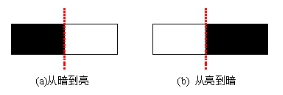

卡尺工具的边缘属性有9种，最佳边缘、第一条边缘、最后一条边缘、整体最亮边缘、整体最暗边缘、亮侧最亮边缘、亮侧最暗边缘、暗侧最亮边缘和暗侧最暗边缘。单边缘模式下，边缘属性可以设置。
卡尺工具的主要作用是实现图像边缘点的高精度自动提取，是在一个预先定义好的区域内快速精确地进行边缘检测与定位，卡尺工具的输出边缘点坐标可以作为反投影、拟合测量或其他工具的输入参数。
图1为卡尺工具的一个典型应用示例。卡尺1能通过检测一对边缘点的位置得到矩形的尺寸；卡尺2、3、4、5检测圆形边缘上的4个点，通过这4个点可以拟合得到图中圆形边缘的解析表达式。
卡尺工具的输入为实时图像、参考图像仿射矩形、由固定工具计算得到的旋转角和平移量，输出为实时图像中的感兴趣边缘点，如图2所示。
在对边缘进行检测时，需要定义一个合适的检测矩形，即仿射矩形区域，使得仿射矩形包含待检测边缘而且投影边和待检测边缘平行，以保障检测的精度。然而，在实际应用中，由于待测工件的摆放位置和方向是随机的，导致待测边缘的位置和方向也是随机的。因此，为了得到实时图像中合适的仿射矩形区域，在离线建模阶段，用户在参考图像中根据边缘位置和方向设定参考图像仿射区域的大小、位置和方向；在在线检测阶段，根据固定工具得到的旋转角和平移量对参考图像仿射区域进行调整使其满足实时图像的要求。
输入图像：待检测的图像
二维线性变换：该参数一般来源于定位工具，其表示为当前图像中的目标特征相对于模板图像中对应特征的平移、旋转、缩放变换。实时在线检测时，可通过该参数不断调整找线工具的查找区域。
重点参数说明如下，其余参数可参考“6.参数说明”。
即单边缘模式或双边缘模式，如图3所示。
边缘区域灰度级过渡形式，即从亮到暗或从暗到亮，如图4所示。

一般对于多边缘图像，需要设置合适的边缘属性。
最佳边缘：在查找区域内，图像边缘相邻两侧灰度值相差最大的边缘；
第一条边缘：在查找区域内，沿着卡尺Y轴的正方向，符合边缘极性的第一条图像边缘；
最后一条边缘：在查找区域内，沿着卡尺Y轴的正方向，符合边缘极性的最后一条图像边缘；
整体最亮边缘：在查找区域内，图像边缘两侧亮度平均值（灰度值平均值最大）的边缘；
整体最暗边缘：在查找区域内，图像边缘两侧亮度平均值（灰度值平均值最小）的边缘；
亮侧最亮边缘：在查找区域内，图像边缘亮侧最亮（亮侧灰度值最大）的边缘；
亮侧最暗边缘：在查找区域内，图像边缘亮侧最暗（亮侧灰度值最小）的边缘；
暗侧最亮边缘：在查找区域内，图像边缘暗侧最亮（暗侧灰度值最大）的边缘；
暗侧最暗边缘：在查找区域内，图像边缘暗侧最暗（暗侧灰度值最小）的边缘。
选择双边缘模式时，边缘属性中的整体最亮边缘、整体最暗边缘、亮侧最亮边缘、亮侧最暗边缘、暗侧最亮边缘以及暗侧最暗边缘按最佳边缘处理。当查找范围为整个图像区域，边缘模式为单边缘，边缘极性设置为任意极性，选择不同的边缘属性时，其对应的找线结果如图6所示。
找圆工具增加了对检测结果（包括圆心、半径）的判定功能，用户可开启或关闭对应检测结果的判定功能。当检测结果超出设置的上下限阈值时，判定工具运行失败，用户可根据此时工具的运行结果进行后续处理操作。如图6所示。
| 现象描述 | 解决方法 |
|---|---|
| 查找失败 | 1. 可根据输出窗口错误栏的错误提示，修改对比度阈值、滤波半宽、最大输出个数等参数。 2. 判定失败。位置判定上下限阈值设置不合理，可根据实际情况修改其上下限阈值 |
| 参数名称 | 参数描述 |
|---|---|
| 输入图像 | 输入图像宽度、高度、像素大小，同图像窗口的输入图像参数。 |
| 二维线性变换 | 目标相对于模板的平移、旋转、缩放变换。 |
| 查找区域 | 目标在图像中的查找范围，通过中心Center、尺寸Size和旋转Rotation对查找区域进行设置。 |
| 边缘模式 | 卡尺工具的边缘模式有2种，单边缘和双边缘。 |
| 边缘1（2）极性 | 边缘极性是指图像边缘灰度级的过渡形式，分为3种，任意极性、亮到暗和暗到亮。 |
| 对比度阈值 | 卡尺工具默认只采用对比度评价分数，即按照边缘信号的强度来评分，输出边缘最强的点。对比度阈值的取值范围是(0,255)。 |
| 滤波器半宽 | 卡尺工具中涉及到对图像边缘进行滤波操作，滤波器半宽尺寸与图像边缘的锐度有关系。图像边缘的锐度越高，滤波器半宽尺寸可以设置的越小。滤波器半宽尺寸的取值范围为1~无穷大。 |
| 最大输出个数 | 输出结果的最大个数。 |
| 边缘属性 | 在查找区域内，卡尺根据不同的边缘属性，确定图像边缘的精确位置。 卡尺工具的边缘属性有9种，最佳边缘、第一条边缘、最后一条边缘、整体最亮边缘、整体最暗边缘、亮侧最亮边缘、亮侧最暗边缘、暗侧最亮边缘和暗侧最暗边缘。单边缘模式下，边缘属性可以设置。 |
| 位置X上限 | 测量结果位置X的判断上限阈值，取值范围[0,999999.999999]， 且下限应小于等于上限。 |
| 位置X下限 | 测量结果位置X的判断下限阈值，取值范围[0,999999.999999]， 且下限应小于等于上限。 |
| 位置Y上限 | 测量结果位置Y的判断上限阈值，取值范围[0,999999.999999]， 且下限应小于等于上限。 |
| 位置Y下限 | 测量结果位置Y的判断下限阈值，取值范围[0,999999.999999]， 且下限应小于等于上限。 |
| 参数名称 | 参数描述 |
|---|---|
| 输入图像 | 输出图像宽度、高度、像素大小。 |
| 单边卡尺结果 | 边缘模式为单边缘时的检测结果，包括边缘点坐标、分数、偏移值、对比度。 |
| 双边卡尺结果 | 边缘模式为双边缘时的检测结果，包括边缘点坐标、分数、偏移值、对比度。 |
| 位置 | 单边卡尺，输出卡尺结果第一个点的位置；双边卡尺，输出第一组卡尺结果点的中点位置。 |
| 位置X | 输出位置参数的X坐标值。 |
| 位置Y | 输出位置参数的Y坐标值。 |
| 执行结果 | 工具执行结果。 |
| 执行时间 | 工具执行时间。 |
参见“\Samples\形状间距及相关点.gvp”。